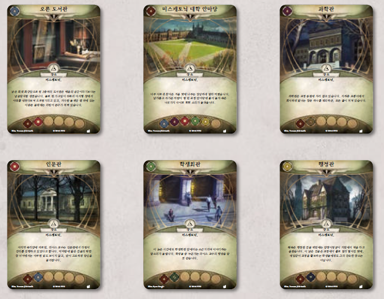

도입부: 아미티지 박사는 동료인 워렌 라이스 교수가 곤경에 처했을까봐 걱정했습니다. 그는 자신의 친구를 찾아 달라고 도움을 요청했습니다. 라이스 교수는 그저 몇 시간 정도 “어디 있는지 안 보이는” 정도에 불과한 듯한데, 아미티지의 염려는 이상하리만치 과해 보입니다…
조사자 준비로 이어집니다.
조사자 준비
- 조사자마다 각자 사용 가능한 동행 하나씩을 선택해도 됩니다(조사자 수보다 사용 가능한 동행 수가 적다면, 선택할 수 있는 데까지만 선택합니다). 각자 본인이 선택한 동행을 플레이 영역 중 자신의 플레이 영역에 둡니다. (이러한 동행 자산은 여러 조우 세트에 걸쳐서 포함되어 있습니다.) 이번 시나리오가 이번 캠페인의 첫 번째 시나리오라면, 사용 가능한 동행이 아직 없을 것입니다.
시나리오 준비
- 다음 조우 세트의 모든 카드를 모읍니다. 과외 활동, 쏙독새, 돌아온 과외 활동, 문턱 저 너머, 되살아난 악, 비밀 문, 요그 소토스의 특사, 과외 활동(도전 모드), 뒤틀린 마술, 아포고몬의 종복. 이 세트에는 다음 아이콘이 그려져 있습니다.

(파란색은 돌아온 던위치의 유산, 빨간색은 던위치의 유산 도전 모드에 속한 조우 세트입니다)
- 과외 활동 조우 세트에 포함된 시나리오 참조 카드를 게임에서 제거합니다. 과외 활동(도전 모드) 조우 세트에 포함된 시나리오 참조 카드를 사용합니다.
- 이번 시나리오에서는 다음 상황에 따라 어떤 ‘교수실’을 사용할지 정해집니다.
- “과외 활동”이 캠페인의 첫 번째 시나리오라면, ‘교수실(아직 이른 밤)’을 사용합니다. 이 카드를 비플레이 상태로 치워 둡니다. ‘교수실(시간이 늦었다)’을 게임에서 제거합니다.
- “도박장은 언제나 이긴다”를 완료했다면, ‘교수실(시간이 늦었다)’을 사용합니다. 이 카드를 비플레이 상태로 치워 둡니다. ‘교수실(아직 이른 밤)’을 게임에서 제거합니다.
- ‘연금술 혼합물’, ‘실험체’, ‘기숙사’, ‘연금술 실험실’을 비플레이 상태로 치워 둡니다.
- ‘죽음을 열망하다’ 음모 사본 2장과 과외 활동 조우 세트에 포함된 ‘워렌 라이스 교수’ 이야기 자산을 게임에서 제거합니다.
- 과외 활동(도전 모드) 조우 세트에 포함된 (‘동행’ 키워드를 가진 버전의) ‘워렌 라이스 교수’, ‘에이미 박’ 이야기 자산을 게임에서 제거합니다. (이러한 카드는 결말에서 사용합니다.)
- 과외 활동 조우 세트에 포함된 ‘재즈 멀리건’ 이야기 자산을 게임에서 제거합니다. 과외 활동(도전 모드) 조우 세트에 포함된 ‘재즈 멀리건(부상당한 관리실장)’ 이야기 자산과 ‘재즈 멀리건(적대적인 관리실장)’ 이야기 자산을 비플레이 상태로 치워 둡니다. 주요목적 1b/2a에서 언급하는 ‘재즈 멀리건’은 ‘재즈 멀리건(적대적인 관리실장)’을 뜻합니다.
- ‘재즈 멀리건(부상당한 관리실장)’ 이야기 자산을 비플레이 상태로 치워 둘 때, 2명 이하로 게임을 하고 있다면 a면, 3명 이상이 게임을 하고 있다면 b면이 보이도록 치워두는 것이 좋습니다.
- 다음과 같이 장소를 플레이 영역에 둡니다.
- ‘미스캐토닉 대학 안마당’, ‘인문관’, ‘학생회관’, ‘과학관’, ‘행정관’ 장소를 플레이 영역에 둡니다.
- ‘오른 도서관’과 ‘워렌 천문대’ 중에서 무작위로 하나를 선택합니다. 선택한 장소를 플레이 영역에 두고 다른 하나는 게임에서 제거합니다.
- 모든 조사자는 ‘미스캐토닉 대학 안마당’에서 시작합니다.
- ‘모여드는 안개’ 음모 카드를 ‘행정관’에 부착하고 그 위에 자원을 1 [조사자]개 놓습니다.
- 난이도를 확인합니다.
- 어려움 난이도로 게임을 즐긴다면, 주요사건 1a에 파멸을 1개 놓습니다.
- 전문가 난이도로 게임을 즐긴다면, 주요사건 1a에 파멸을 2개 놓습니다.
- 도박장은 언제나 이긴다(도전 모드)를 완료했다면…
- 혼돈 주머니에 [옛것] 토큰을 1개 추가합니다.
- 돌아온 과외 활동 조우 세트에 포함된 ‘종복이 된 경비원’ 사본을 1장 찾아서 ‘행정관’에 출현시킵니다.
- 남은 조우 카드를 함께 섞어, 조우 덱을 만듭니다.
- 이제 당신은 게임을 시작할 준비가 되었습니다.
추천 장소 배치

시나리오가 끝날 때까지 읽지 마시오
아무 결말에도 도달하지 못했다면(모든 조사자가 후퇴했거나 쓰러졌다면): 대학에서 도망쳐 나오는 중에 교정의 북쪽 끝에서 비명 소리가 들려옵니다. 구급차가 당신을 지나쳐 가고, 당신은 혹시나 최악의 상황이 벌어지진 않았을까 하는 걱정에 휩싸입니다. 몇 시간이 지나서야 ‘미친 개와도 같은 무언가’가 대학 기숙사로 향했다는 이야기를 전해 듣습니다. 괴물이 기숙사에 있던 학생들을 공격했고, 그로 인해 많은 사상자가 발생했다고 합니다.
- 캠페인 기록지에 워렌 라이스 교수가 납치되었다라고 기록합니다.
- 캠페인 기록지에 조사자들이 학생들을 구하지 못했다라고 기록합니다. 당신은 죄책감에 사로잡힙니다. 캠페인이 끝날 때까지 혼돈 주머니에 [석판] 토큰을 1개 추가합니다.
- 각 조사자는 승점 더미에 있는 카드의 승점값만큼 경험치를 얻습니다. 각 조사자는 그날 밤 사건을 곱씹어 봄에 따라, 경험치를 추가로 1씩 얻습니다.
- 이번 시나리오가 캠페인의 첫 번째 시나리오라면, 시나리오 I-B: “도박장은 언제나 이긴다”로 이어집니다. 그 외의 경우, 막간 I: “아미티지의 운명”으로 이어집니다.
결말 1: 재갈이 물린 채 사무실 옷장 안에 묶여 있던 워렌 라이스 교수를 찾았습니다. 재갈과 결박을 풀어주자, 그는 이상한 사람 몇 명이 수 시간 동안 그를 뒤쫓으며 교정을 돌아다녔다고 알려주었습니다. 라이스를 사무실에 몰아넣고 가둔 것도 그들이라고 합니다. 하지만 목적이 무엇이었는지는 라이스도 알지 못합니다. 아미티지 박사가 보내서 왔다는 당신의 말에 그는 한결 안심한 듯 보입니다. 하지만, 그는 모건 박사 역시 위험에 빠졌을 것이라고 알려줍니다. 낯선 자들의 목표가 라이스 교수임은 분명한 듯하여, 당신은 그를 최대한 빨리 교정에서 데리고 나가는 것을 최우선 목표로 삼습니다. 교정을 나서는 순간 교정의 북쪽 끝에서 비명 소리가 들려옵니다. 구급차가 당신을 지나쳐 가고, 당신은 혹시나 최악의 상황이 벌어지진 않았을까 하는 걱정에 휩싸입니다. 몇 시간이 지나서야 ‘미친 개와도 같은 무언가’가 대학 기숙사로 향했다는 이야기를 전해 듣습니다. 괴물이 기숙사에 있던 학생들을 공격했고, 그로 인해 많은 사상자가 발생했다고 합니다.
- 캠페인 기록지에 조사자들이 워렌 라이스 교수를 구출했다라고 기록합니다. 캠페인 기록지의 “동행” 항목에 ‘워렌 라이스 교수’를 기록합니다.
- 캠페인 기록지에 조사자들이 학생들을 구하지 못했다라고 기록합니다. 당신은 죄책감에 사로잡힙니다. 캠페인이 끝날 때까지 혼돈 주머니에 [석판] 토큰을 1개 추가합니다.
- 각 조사자는 승점 더미에 있는 카드의 승점값만큼 경험치를 얻습니다.
- 시나리오 I-B: “도박장은 언제나 이긴다”로 이어집니다.
결말 2: 당신은 기숙사의 화재경보기를 닥치는 대로 작동시킨 후, 학생들을 북쪽 출구로 인도하며 교정에서 빠져나가려 합니다. 혼란에 빠져 지친 수많은 학생들에게 이 사건의 진상을 설명하는 것은 득보다 실이 더 많을 것 같습니다. 몇 분이나 흘렀을까, 찢어지게 날카로운 비명 소리가 교정에 울려 퍼집니다. 당신은 학생들에게 기다리라고 말하곤, 그비명을 조사하기 위해 기숙사로 돌아갑니다. 이상하게도 그 어떤 괴물의 흔적도 찾을 수 없었지만, 안심보다는 걱정이 밀려옵니다. 서둘러 교수실에 가서 라이스 교수를 찾아보았으나, 그의 흔적은 어디에도 보이지 않습니다.
- 캠페인 기록지에 워렌 라이스 교수가 납치되었다라고 기록합니다.
- 캠페인 기록지에 학생들을 구해냈다라고 기록합니다.
- 이번 시나리오가 캠페인의 두 번째 시나리오라면, 캠페인 안내서의 “동행” 항목에 ‘에이미 박’을 기록하고 바로 다음 내용도 추가로 읽습니다.
- 교수실을 수색하던 도중 복도를 내달리는 다급한 발걸음 소리가 울려 퍼집니다. 곧이어 교수실 문이 쾅 하고 열리더니 얼굴 높이까지 될법한 높이의 책더미를 껴안은 여학생이 들어옵니다. “라이스 교수님, 오른 도서관에서 대여 인가가 났어요. 저번에 말씀하셨던…” 학생은 교수가 아니라 외부인이 있다는 것을 이제야 알아차리더니 휘둥그레진 눈으로 묻습니다. “혹시 어떻게 오셨나요? 오늘 저희 교수님과 약속을 잡으셨나요?” 라이스 교수가 납치되었을 가능성이 높다고 밝히자, 책이 바닥으로 후드득 떨어집니다. 학생은 한참을 울먹이더니 이렇게 말합니다. “며칠 전, 교수님께서 뉴잉글랜드 사교 종파에 대한 민담 채록을 모아 달라고 하셨어요. 뭔가 심상치 않은 사교의 움직임이 벌어지고 있다면서요. 그게 교수님 당신께 생길 일이라고는 생각지 못했던 거죠. 아무래도 저도 따라가야겠어요. 교수님에게는 제가 필요해요. 제게도 교수님이 필요하고요.”
- 각 조사자는 승점 더미에 있는 카드의 승점값만큼 경험치를 얻습니다.
- 이번 시나리오가 캠페인의 첫 번째 시나리오라면, 시나리오 I-B: “도박장은 언제나 이긴다”로 진행합니다. 그 외의 경우, 막간 I: “아미티지의 운명”으로 이어집니다.
결말 3: 당신은 연금술 학부에서 뛰쳐나온 기이하고 끔찍한 괴물을 쓰러뜨리고 라이스 교수를 찾아 교수실로 달려갑니다. 하지만 교수실에 도착했을 땐, 라이스 교수의 흔적은 어디에도 보이지 않았습니다.
- 캠페인 기록지에 워렌 라이스 교수가 납치되었다라고 기록합니다.
- 캠페인 기록지에 실험체를 쓰러뜨렸다라고 기록합니다.
- 각 조사자는 승점 더미에 있는 카드의 승점값만큼 경험치를 얻습니다.
- 이번 시나리오가 캠페인의 첫 번째 시나리오라면, 시나리오 I-B: “도박장은 언제나 이긴다”로 진행합니다. 그 외의 경우, 막간 I: “아미티지의 운명”으로 이어집니다.
결말 4: 몇 시간 후 정신을 차렸을 때엔, 당신은 탈진하고 다친 상태였습니다. 당신이 무엇을 보았는지는 확실치 않지만, 그 괴물의 모습을 본 당신의 마음은 공포에 잠식당합니다. 당신은 다른 생존자로부터 ‘미친 개와도 같은 무언가’가 대학 기숙사로 향했다는 이야기를 전해 듣습니다. 괴물이 기숙사에 있던 학생들을 공격했고, 그로 인해 많은 사상자가 발생했다고 합니다.
- 캠페인 기록지에 조사자들이 몇 시간 동안 의식을 잃었다라고 기록합니다.
- 캠페인 기록지에 워렌 라이스 교수가 납치되었다라고 기록합니다.
- 각 조사자는 승점 더미에 있는 카드의 승점값만큼 경험치를 얻습니다. 각 조사자는 그날 밤 사건을 곱씹어 봄에 따라, 경험치를 추가로 1씩 얻습니다.
- 캠페인 기록지에 조사자들이 학생들을 구하지 못했다라고 기록합니다. 당신은 죄책감에 사로잡힙니다. 캠페인이 끝날 때까지 혼돈 주머니에 [석판] 토큰을 1개 추가합니다.
- 이번 시나리오가 캠페인의 첫 번째 시나리오라면, 시나리오 I-B: “도박장은 언제나 이긴다”로 진행합니다. 그 외의 경우, 막간 I: “아미티지의 운명”으로 이어집니다.